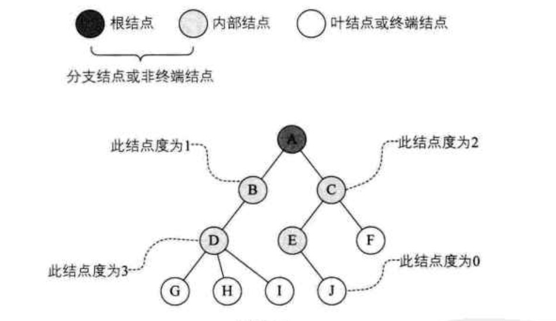
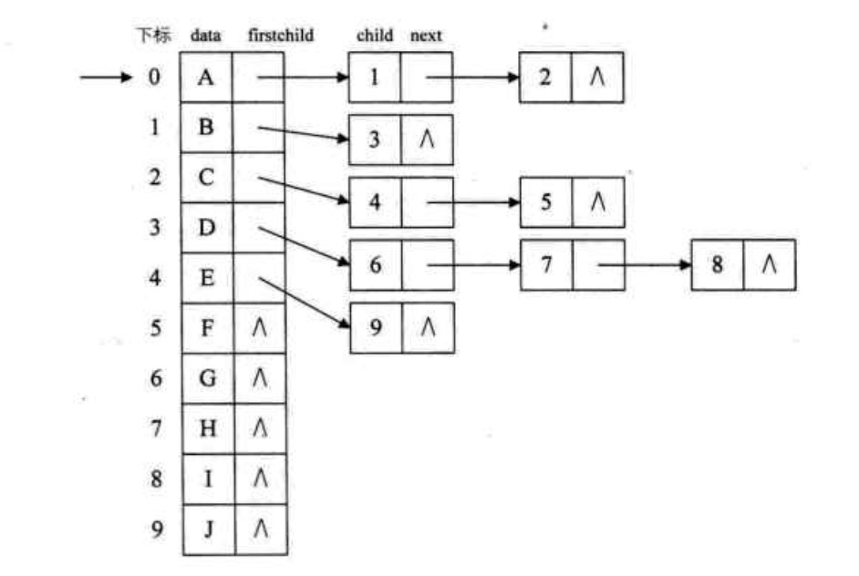
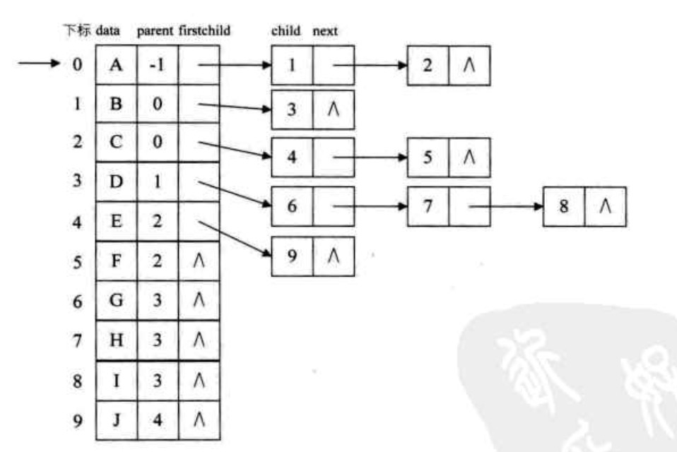
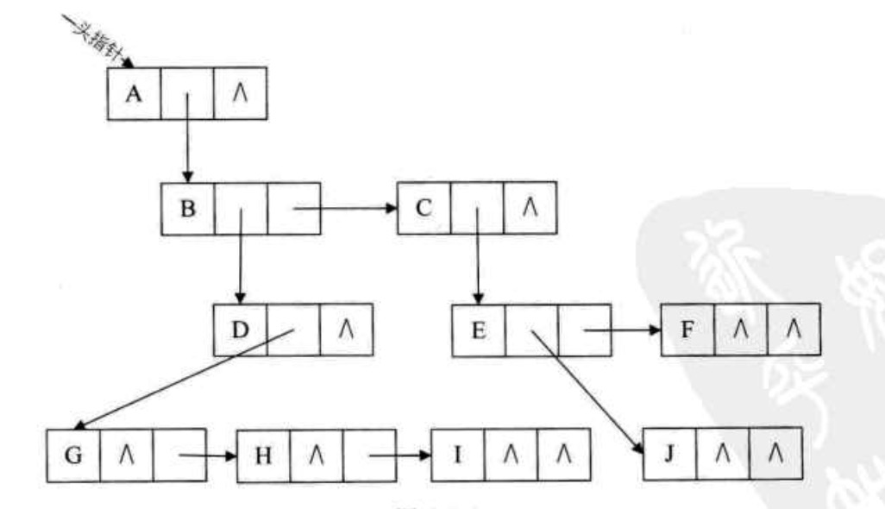
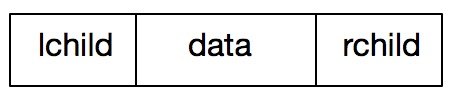
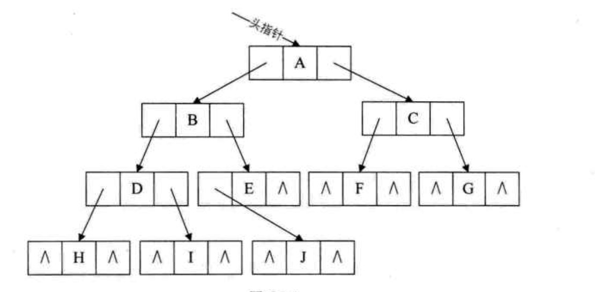

树的定义
树是n(n>=0)个结点的有限集。n=0 时称为空树。
结点的分类
结点拥有的子树数称为结点的度(Degree)。度为 0 的结点称为叶结点(Leaf)或者终端结点；度不为 0 的结点称为非终端结点或者分支结点。除根结点之外，分支结点也称为内部结点。树的度是树内各结点的度的最大值。
如下图，因为这棵树结点的度的最大值是结点 D 的度，为 3，所以树的度也为 3。

树的存储结构
有双亲表示法、孩子表示法、孩子兄弟表示法 3 种表示法表示树的结构。
- 双亲表示法
| data | parent |
|---|---|
其中，data 是数据域，存储结点的数据信息；而 parent 是指针域，存储该结点的双亲在数组中的下标。以上数据结构可拓展，比如加入个孩子结点域firstchild或者加个右兄弟域rightsib。
1 | #define MAX_TREE_SIZE 100 |
- 孩子表示法
把每个结点的孩子结点排列起来，以单链表做存储结构，则 n 个结点有 n 个孩子链表，如果是叶子结点则此单链表为空。然后 n 个头指针又组成一个线性表，采用顺序存储结构，存放进一个一维数组中。
如下：

为此，设计两种结点结构，一个是孩子链表的孩子结点。
| child | next |
|---|---|
其中 child 是数据域，用来存储某个结点在表头数组中的下标。next 是指针域，用来存储指向某个结点的下一个孩子结点的指针。
另一个是表头数组的表头结点，如下：
| data | firstchild |
|---|---|
其中 data 是数据域，存储某结点的数据信息。firstchild 是头指针域，存储该结点的孩子链表的头指针。
以下是孩子表示法的结构定义：
1 | /*数的孩子表示法结构定义*/ |
这样的结构对于我们要查找某个结点的某个孩子，或者找某个结点的兄弟，只需要查找这个结点的孩子单链表即可。对于遍历整棵树也是很方便的，对头结点的数组循环即可。
但是，如果要寻找某个结点的双亲是谁就会比较麻烦，需要遍历整棵树才行。这时候稍微改下设计就好了，添加个父结点域。如下：

- 孩子兄弟表示法
结点结构设计如下：
| data | firstchild | rightsib |
|---|---|---|
其中 data 是数据域，firstchild 为指针域，存储该结点的第一个孩子结点的存储地址，rightsib 是指针域，存储该结点的右兄弟结点的存储地址。
结构定义代码如下：1
2
3
4
5
6
7
8
9#define MAX_TREE_SIZE 100
typedef int TElemType;
typedef struct CSNode
{
TElemType data;
struct CSNode *firstchild, *rightsib;
} CSNode, *CSTree;

二叉树
二叉树（Binary Tree）是 n(n>=0)个结点的有限集合，改集合或者为空集（称为空二叉树）,或者由一个根结点和两颗互不相交的、分别称为根节点的左子树和右子树的二叉树组成。
二叉树具有五种基本形态：
- 空二叉树
- 只有一个根结点
- 根结点只有左子树
- 根结点只有右子树
- 根结点既有左子树又有右子树
特殊二叉树
- 斜树
所有结点都只有左子树的二叉树叫左斜树；所有结点都只有右子树的二叉树叫右斜树。这两者统称为斜树。
- 满二叉树
在一棵二叉树中，如果所有分支结点都存在左子树和右子树，并且所有叶子都在同一层上，这样的二叉树称为满二叉树。
- 完全二叉树
对一棵具有 n 个结点的二叉树按层序编号，如果编号为 i（1<=i<=n）的结点与同样深度的满二叉树中编号为 i 的结点在二叉树中位置完全相同，则这棵二叉树称为完全二叉树。
二叉树性质
存储结构

其中，data 是数据域，lchild 和 rchild 是指针域，分别存放指向左孩子和右孩子的指针。
1 | typedef int TElemType; |
